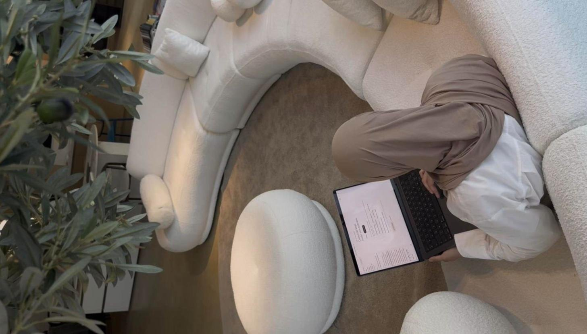
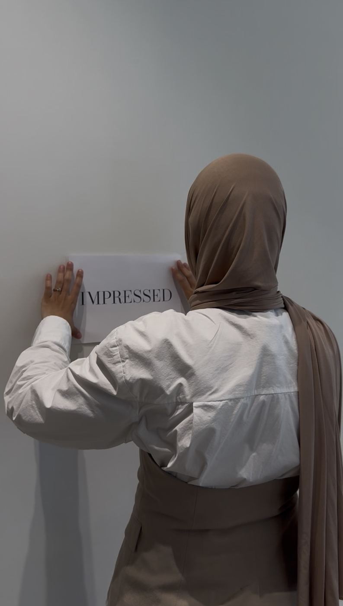
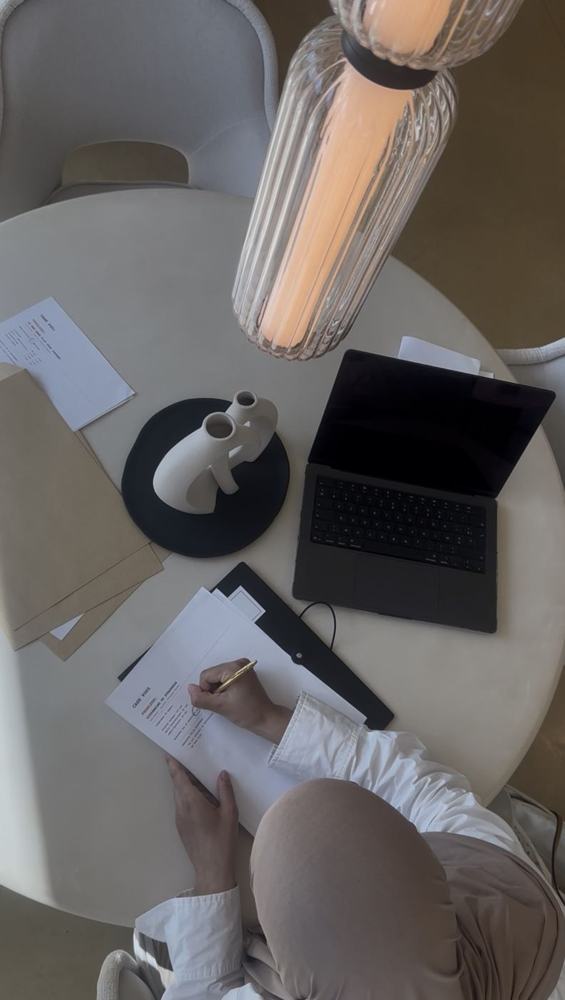
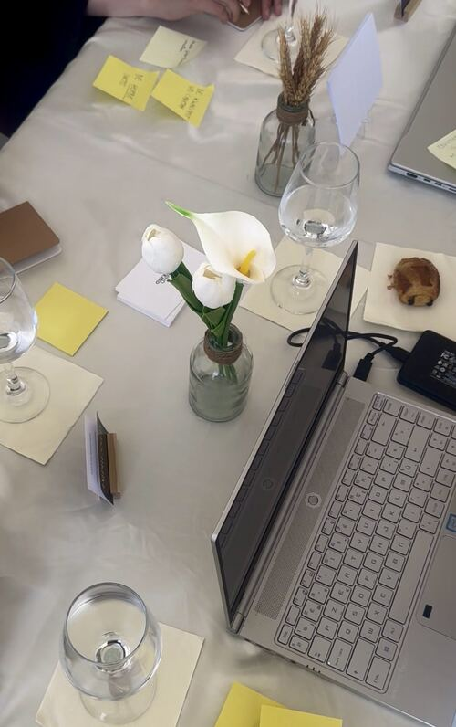
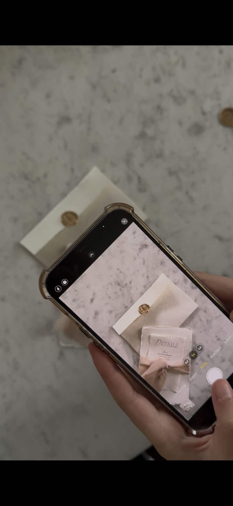
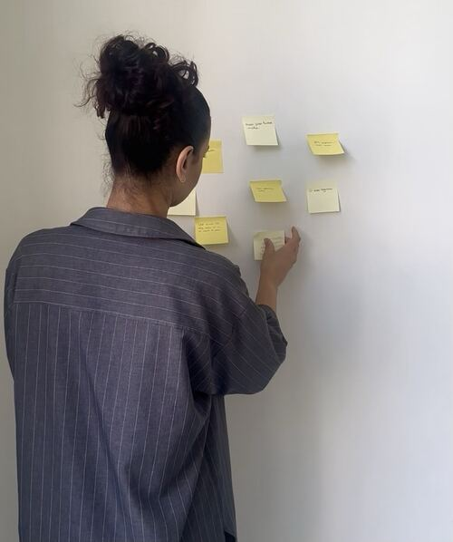
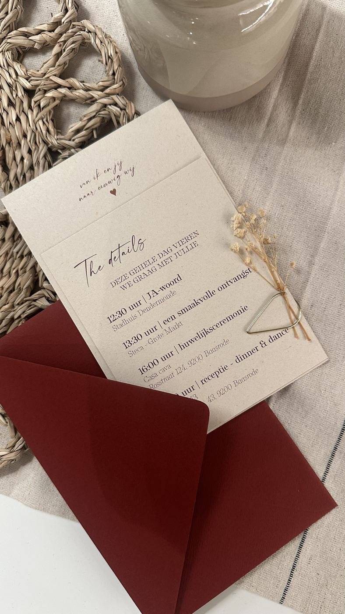
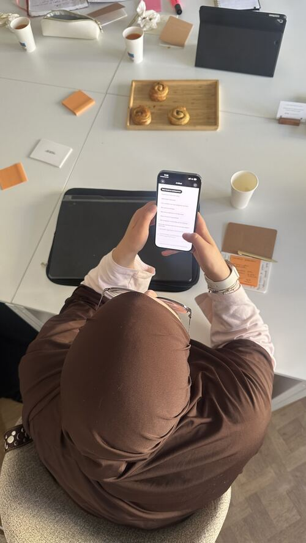
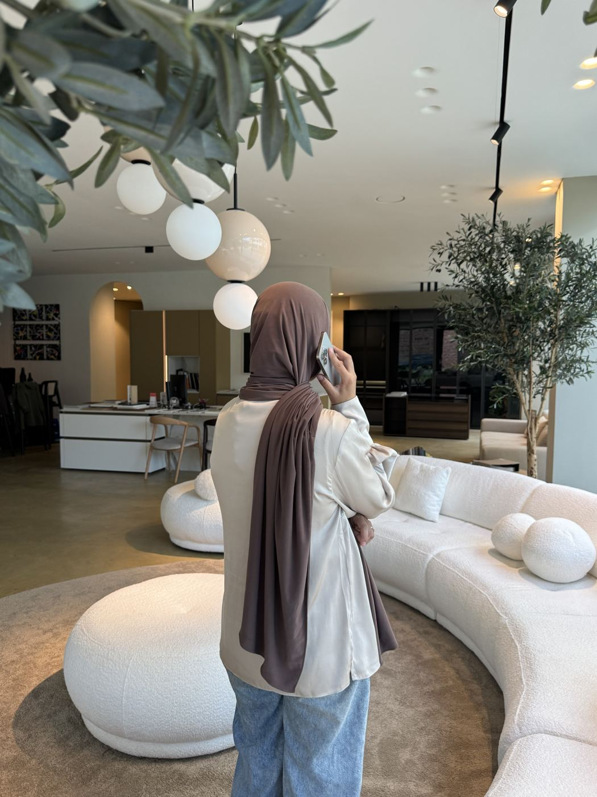

Met Impressed Growth help ik trouwleveranciers tijd winnen met content en marketing, met AI. Met Impressed Paper help ik grafisch vormgevers in de trouwsector starten met kaarten en drukwerk, zonder dure fouten.
Voor trouwleveranciers
Voor fotografen, floristen, planners en andere trouwleveranciers die te veel tijd verliezen aan content en marketing. Met AI werk je slimmer, niet harder.
Content, AI en marketing.
Voor grafisch vormgevers in de trouwsector
Voor vormgevers die trouwkaarten willen aanbieden of zelf willen printen. Welk papier, welke printer, welke drukker: ik deel wat ik in 8 jaar leerde.
Trouwkaarten, papier en printen.
Impressed voor content

Ik zit al meer dan 8 jaar in de drukwerkwereld. Impressed Paper begon met trouw- en geboortekaarten en groeide uit tot drukwerk op maat en masterclasses.
Impressed Growth groeide uit mijn werk als contentstrateeg. Eerst 1-op-1, nu vooral aan tafel met kleine groepen ondernemers die precies hetzelfde meemaken als jij.
Wat ik onderweg leerde? Tijd is kostbaar. En de meeste ondernemers verliezen er veel te veel aan door alles alleen uit te zoeken. Dus hou ik het praktisch: concrete tips, een plan waar je morgen al mee verder kan, en af en toe een croissant erbij.
ondernemers begeleid
jaar in drukwerk

Niet harder werken. Slimmer werken.
Kleine groepen, echte gesprekken. Je gaat naar huis met iets dat je meteen gebruikt.
Antwerpen · voormiddag · €65
Online · €85 · incl. samplepakket
Maandelijks in Vilvoorde · 9u30 tot 12u30 · max 6 ondernemers · €85 per sessie, met een beurtenkaart vanaf €70 per keer
Kies wat je herkent en je ziet meteen waar je start.
Dan start je hier
1 maandagvoormiddag per maand aan tafel in Vilvoorde. Eerst een korte focus op 1 onderwerp, daarna maak je je posts, krijg je feedback en plannen we alles in. Je gaat naar huis met je content klaar voor de volgende maand.
Reserveer je plek →Dan start je hier
In 90 minuten gaat het alleen over jouw zaak. We bekijken waarom je posts geen aanvragen opleveren, kiezen samen wat nu echt telt en schrappen de rest. Je gaat naar huis met een helder plan, plus een uitgeschreven actieplan in je mailbox. No bs, wel focus.
Plan je strategiecall →Dan start je hier
Geen lijst van 20 doelen die je in januari al vergeet. Wel 2 of 3 die haalbaar voelen, samen bepaald, met een eerste stap om meteen te starten. Net op tijd voor het nieuwe trouwseizoen.
Schrijf je in →Dan start je hier
Jij vertelt waar je vastzit, ik zeg je recht voor de raap of en hoe ik kan helpen. Geen salespitch.
Plan een kennismaking →Dan start je hier
Zelf printen of naar een drukker, de juiste printer kiezen, welke papiersoorten bij jouw trouwkaarten passen, do's en don'ts, en waar je de beste leveranciers vindt. No gatekeeping.
Bekijk de masterclass →Dan start je hier
Alles wat ik zelf had willen weten toen ik startte. Toen kocht ik meteen een grote printer. Slimme keuze? Not sure. Zo hoef jij die fouten niet meer te maken.
Stuur mij de gids →Dan start je hier
De basics om zelf te starten met kaarten maken, in je eigen tempo. Lees het wanneer het jou past en neem eruit wat je nu nodig hebt.
Bekijk het e-book →Dan start je hier
Jij ontwerpt, ik zorg dat het op het juiste papier staat. Of je geeft alles uit handen, van eerste idee tot het stuk dat je in je handen houdt.
Vraag je drukwerk aan →Of mail rechtstreeks naar info@impressedpaper.com
Wat vrouwen zeggen na een Create & Connect sessie of de masterclass.

De workshop was super interessant, ik heb echt verschillende inzichten gekregen over content creatie en ook hoe ik met AI kan omgaan om het makkelijker te maken. Dankzij de workshop heb ik echt inspiratie genoeg om de ideeën uit te werken.Calm Touch Massagetherapeut · Create & Connect

Ik vond het echt een heel fijne sessie! Vooral om te weten waar ik dat handgeschept papier kon kopen, omdat ik het vaak heel duur vond online. Ik heb geprobeerd om dat eens te embossen en vond het nog mooier! You did a very great job!Gohart Masterclass Kaarten maken als een pro

De workshop van gisteren was super leerrijk, ik heb heel wat tips en tools gekregen om te kunnen evolueren op vlak van content creatie. Altijd tof om andere ondernemers te ontmoeten en nieuwe connecties te maken.Hanae Diëtiste & sportcoach · Create & Connect

Ik vond het mega interessant! Super tof dat ik zoveel vragen mocht stellen en heel verhelderend over leveranciers. Want ik ging zelf al een drukkerij beginnen 😅Illustrations by Lore Masterclass Kaarten maken als een pro

De workshop was alweer heeel erg interessant. Ik vind de manier waarop je dingen uitlegt heel inspirerend en verlaat elke workshop weer met 10+ nieuwe ideeën.Sayfourah Studio Lettering & stationery artist · Create & Connect
Gratis voor vormgevers die starten
Voorkom dure fouten bij papier, drukwerk en ontwerp. Alles wat ik zelf had willen weten toen ik startte, in 1 gids.
Staat jouw vraag er niet tussen? Mail ze gerust naar info@impressedpaper.com, ik antwoord zelf.

20 minuten, geen salespitch. Jij vertelt waar je vastzit, ik zeg je of en hoe ik kan helpen.
Yes. We starten bij wat jij nu gebruikt, of net niet. Je hoeft geen tools te kennen, wel je eigen zaak.
Ja. Je zit in kleine groep aan tafel, in Vilvoorde of Antwerpen. Een klein ontbijt of een hapje en drankje zit er altijd bij.
Of je beter zelf print of naar een drukker gaat, welke printer je nodig hebt, welke papiersoorten bij jouw kaarten passen, en waar je de beste leveranciers vindt. Je krijgt er een samplepakket bij om meteen te testen.
Zeker. Voor huwelijk, geboorte en events maak ik stationery op maat, van eerste idee tot het stuk dat je in je handen houdt.
20 minuten om samen te kijken waar je best start, online of op papier. No pressure.
Liever eerst mailen? info@impressedpaper.com